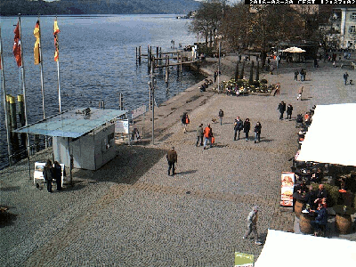
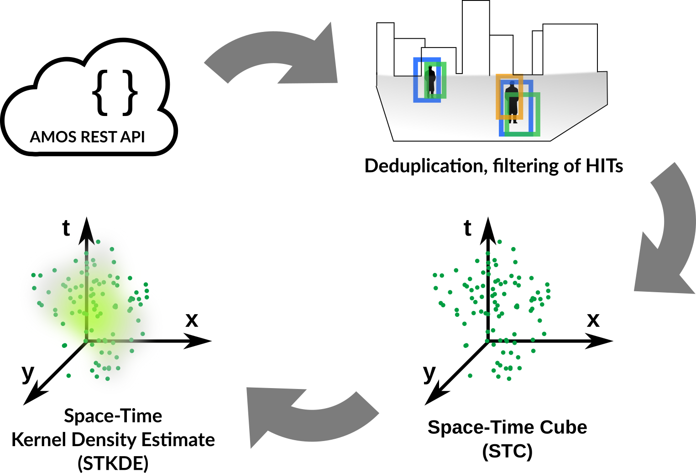
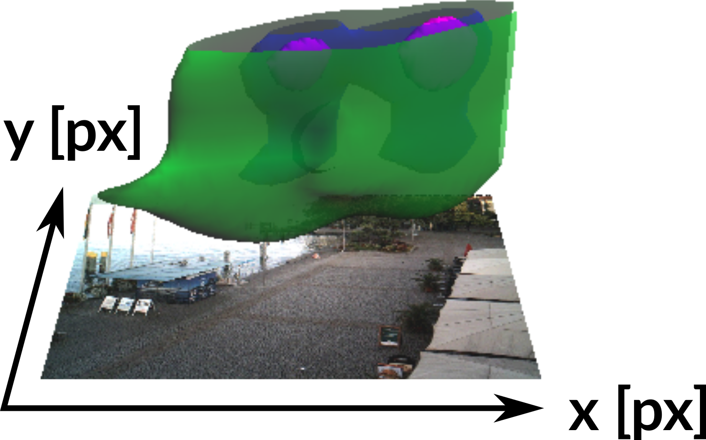
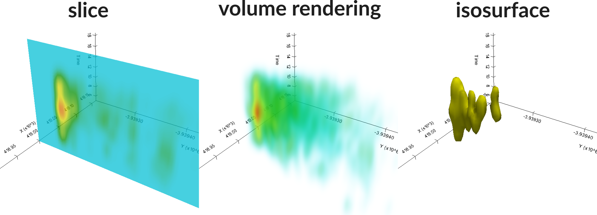
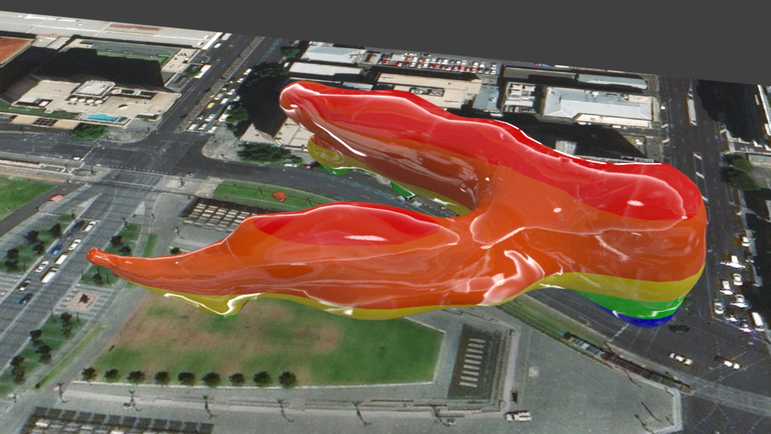
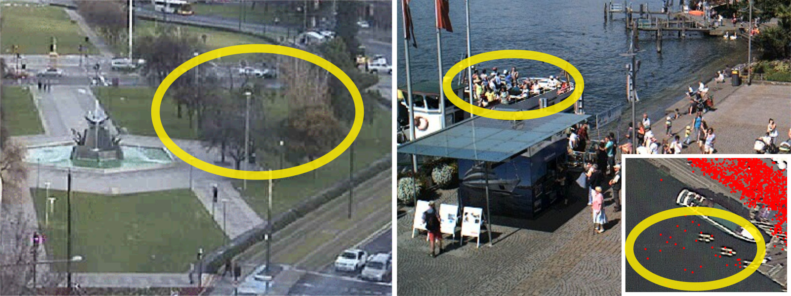
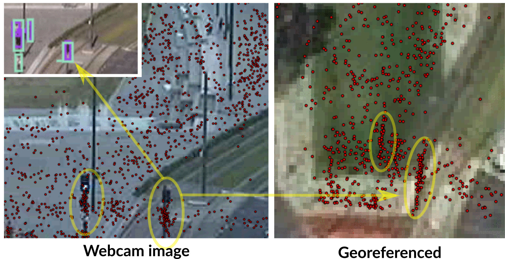

FOSS4G 2017
Visualization and analysis of active transportation patterns derived from public webcams
Anna Petrasova, J. Aaron Hipp, Helena Mitasova
North Carolina State University
I would like to present our work on how we took advantage of
crowdsourced data and crowdsourced work to analyze and
visualize active transportation data.
Public webcams
Rich source of spatio-temporal information
weather, traffic, changes in environment, phenology, ...
active transportation behavior in urban areas

Public webcams is a great source of spatio-temporal information, not just for tourists to check
weather or traffic, but they have been used also for research in different areas.
For example, to observe changes in environment, or in ecology
when trees start to bloom.
Public webcams in urban areas especially is also a valuable source of information
about people and their transportation behavior, which is the main topic of this talk.
Naturally, the widespread availability of the webcams all over the world together with
the huge amount of data coming from each webcam every half an hour for example,
has made this datasource highly suitable for research in computer vision and machine learning.
BUT, to actually do any work with this data, there has to be a centralised archive,
of webcam images to facilitate the research.
AMOS
The Archive of Many Outdoor Scenes
collection of long-term timelapse imagery from publicly accessible outdoor webcams around the world
1,128,087,180 images taken from 29945 webcams
a project of the Media and Machines Lab Washington University in St. Louis
online browsing of images and download available
metadata and tags to improve discoverability of webcams
In this project, we have been using AMOS, the archive...
From image to information
How to get from image to information useful for analysis?
Artficial artficial intelligence
So now we have all those webcam images available, but how do we actually extract
useable, structured information?
Basically, we have 2 options, we can use artificial intelligence,
specifically machine learning methods such as neural networks,
or we can use people, specifically platforms such as Amazon Mechanical Turk,
which is also called artificial artifical intelligence, because
it is outsourcing some parts of a computer program to humans,
for those tasks can be carried out much faster by humans than computers.
The term mechanical turk comes from a fake chess-playing machine from the late
18th century.
mTurk HITs (Human Intelligence Tasks)
We used mechanical turk to help us extract the information about people,
bikes, and vehicles on the webcam images.
Here you can see an example of the results from so called HITS, human intelligence tasks
looked like. The workers were asked to draw a bounding box around the people
so that we can get the number of people and their position on the image.
The same image was given to multiple workers to achieve more reliable results.
In a previous study my colleagues determined the number of workers needed to achieve
certain level of reliability.
HITs processing workflow

This is the workflow I developed for the processing of the data from mechanical turk.
Colleagues from Washington University provide REST API for the collected data,
which I used to get the data from the HITs. The HITS have to be filtered
to avoid having duplicate records from those different workers. From each
bounding box I extracted a point representing the place where the person or vehicle
stands. These points are the aggregated into a space time cube representation
with the z axis representing time, specifically the time of a day.
Finally we used space-time kernel density estimation to create a smooth 3D field
representing the density of people or vehicles in the area.
Georeferencing
Using coordinate system of the webcam image:
distances in the image represent varying distances in reality
we can't integrate other geospatial datasets (streets, POIs)
or information from other webcams

However, if we take the points representing people
as they are, we work only in the coordinate system of the image,
which brings many disadvatages....
To overcome the limitation, ...
Solution is to compute projective transformation by matching 4+
stable features in the webcam image to the same features in the orthophoto.
Georeferencing: example
STC visualization
Space-time density of pedestrians represented as a 3D volume,
computed using multivariate Kernel Density Estimation (KDE) with different spatial and temporal bandwidths

After the georeferencing, we create a 3D volume using KDE from the space-time
point data. For the KDE we use different spatial and temporal bandwidths.
The challenge is then how do we visualize this type of data so that we can analyze it
in an interactive way. There are
several ways to do it, among the most well known and most supported in different
software tools are slice representation, volume rendering and isosurface.
Each method has of course its limitations, here we decided to
use the isosurface method, enhanced by coloring the isosurface for better readability.
Pedestrian density visualization
webcam 9706 (July), Ehingen, Germany
Here is an example of the data and its visualization coming from a webcam in Germany.
This is a isosurface of a specific density value, which is colored by the time of day.
The vertical axis is the time of day and don't show it here as a traditional z axis,
but rather the isosurface itself is colored.
So the blue represents early morning, noon is yellow and evening is red.
You can see just from seeing this isosurface, that this part of the town square
has higher pedestrian density during the whole day, but in general there is
much more people in the afternoon and evening. We can further explore the
3D density by changing the isosurface value, so we can see clearly when and where
there are higher concentrations of people.
Effects of plaza reconstruction
webcam 3760 in 2012 (Jul - Sep), Victoria Square, Adelaide, Australia
This is another interesting example where we able to see the effects of reconstruction
of a plaza, specifically Victoria Square in Australia.
This is the sate before the reconstruction, you can see most people
are in the middle part.
Effects of plaza reconstruction
webcam 3760 in 2014 (Jul - Sep), Victoria Square, Adelaide, Australia
And then after 2 years, the patterns change based on the changed urban environment.
Change in pedestrian density (2014 minus 2012)
Positive values ~ increase in density in 2014
Since the Kernel Density is a continuous field, we can easily
subtract the density before and after and get a difference in pedestrian
density, where the positive values mean increase in density after the reconstruction.
High density of pedestrians and vehicles (webcam 5599 )
if (P > percentileP 99 AND V > percentileV 99 , V + P)
In the final example, we can use this method to analyze areas and times of day of potential
conflict between people and vehicles by intersecting the increased densities of
people and cars
Software
For this analysis, I used couple different software packages and libraries
glued together using Python and the whole procedure is automated
so processing a new camera is very easy, with the exception of finding the GCPs
for the georeferencing.
You can find the scripts on my github.
Visualization: GRASS GIS
Visualization: ParaView
webcam 9706 (July), Ehingen, Germany
Visualization: Blender

Conclusion & Future work
new method for harvesting and visualization of spatio-temporal information about active transportation
new way for cities to detect and analyze changes in active transportation behavior in an unintrusive way
georeferenced data give us the ability to incorporate other geospatial data and methods (e.g., solar radiation modeling)
possible thanks to the synergy between crowdsourcing technologies (AMOS, mTurk, open source software)
machine learning techniques trained by mTurk data will enable us to analyze much larger data volume in real-time,
possibly leading to the discovery of more patterns
The presented methodology shows an effective way
to harvest and visualize active transportation data
and could be used actively by cities to detect and analyze changes in active
transportation behavior in a cheap and nonintrusive way.
With the georeferncing step we can incorporate other geospatial data and methods,
for example we were thinking of using solar radiation modeling to see how
the shades influence people's behavior.
This research was possible thanks to the synergy between the different crowdsourcing
technologies and platforms including AMOS, mechanical Turk, and open source software.
Finally, the current and future research is focused on using the mechanical turk
data as a training set for machine learning techniques, which would
ultimately allow us to process the entire database of images, and would reveal
many more spatio-temporal patterns in the data.
Challenges: webcam geometry and view
areas hidden behind trees or other objects
assumes pedestrians and vehicles on a horizontal plane, otherwise we get large spatial errors

Let me discuss couple of challenges we encountered.
In some cases, we can't actually see part of space due trees
or buildings, these ares could be masked or potentially
if desired additional webcam could be installed.
Also the georeferncing currently assumes all objects are on a horizontal plane,
which is mostly true, but there are cases such as here where the people on
the boat are actually higher, which causes error in their transformed positions.
Challenges: mTurk reliability
Traffic lights, statues mistakenly marked as pedestrians, machine learning approaches
would avoid this type of error

Coming back to the reliability
of the mechanical turk data, we saw some repeated mistakes, where many
workers mistakenly marked traffic lights as people, this kind of artifact
can be identified as a kind streak in the georefernced data.
This is a good example of error a machine learning would avoid, because
the traffic light is a stable feature in each image.
References:
Hipp, J. A., Adlakha, D., Gernes, R., Kargol, A., Pless, R., Drive, O. B., Louis, S. (2013).
Do You See What I See: Crowdsource Annotation of Captured Scenes, 24–25.
http://doi.org/10.1145/2526667.2526671
Hipp, J. A., Manteiga, A., Burgess, A., Stylianou, A., Pless, R. (2016).
Webcams, Crowdsourcing, and Enhanced Crosswalks: Developing a Novel Method to Analyze Active Transportation.
Front. Public Health, 4(97). http://doi.org/10.3389/fpubh.2016.00097
Jacobs, N., Roman, N., Pless, R. (2007). Consistent temporal variations in many outdoor scenes.
Proceedings of the IEEE Computer Society Conference on Computer Vision and Pattern Recognition.
http://doi.org/10.1109/CVPR.2007.383258


 Caveats: some webcams change orientation, many objects such as benches, traffic marking are unsuitable as GCPs, stable objects such as statues
can move too
Caveats: some webcams change orientation, many objects such as benches, traffic marking are unsuitable as GCPs, stable objects such as statues
can move too